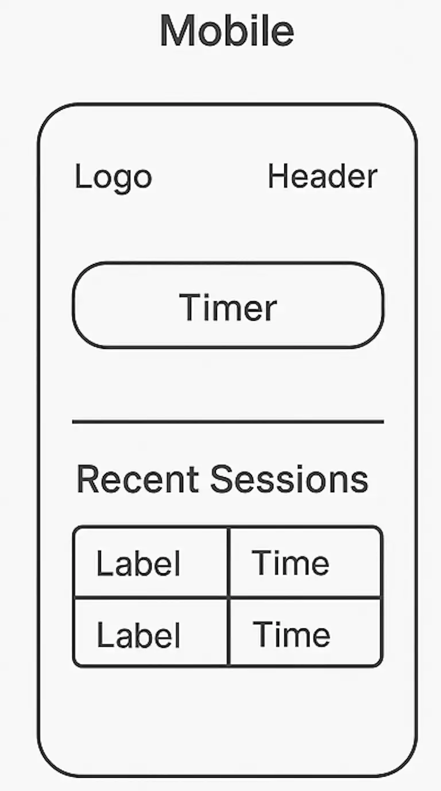
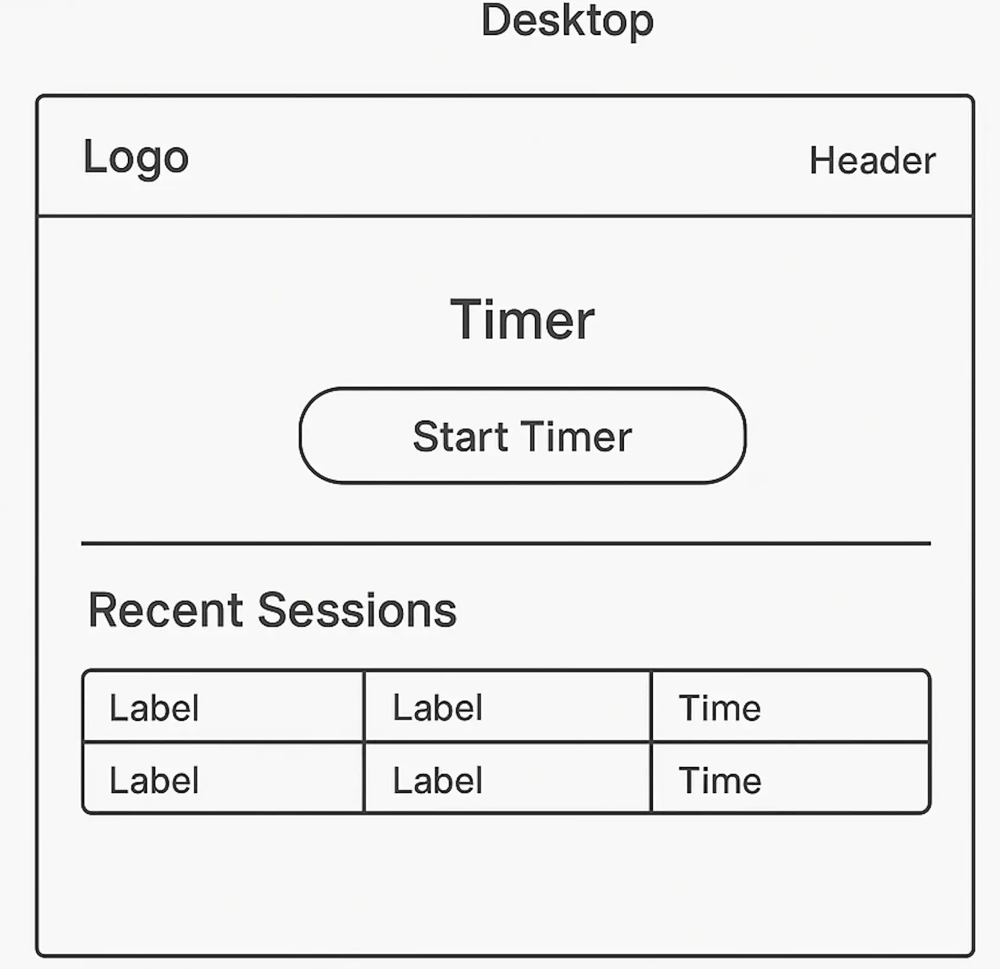

Name: TrackCraft
This name conveys the idea of mastering the craft of time management. It appeals to freelancers, consultants, and independent workers who take pride in efficiently tracking their time and projects.
Optional domain availability: trackcraft.app
The site helps self-employed individuals efficiently track and manage their project time. It provides a simple yet powerful interface to start, stop, and categorize tracked sessions, export logs, and visualize time spent on different tasks.
Mobile View
Desktop View
Note: Wireframe images should be added to your project directory as sketches or digital mockups (can be hand-drawn and scanned or created in a tool like Figma).